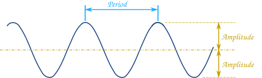
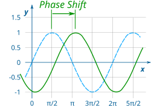
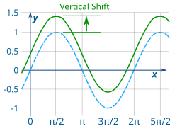
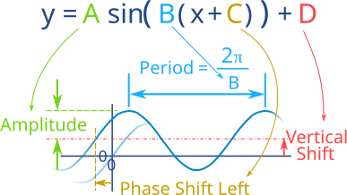
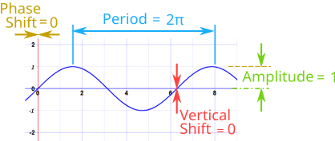
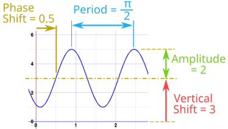
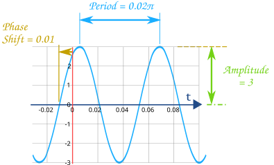
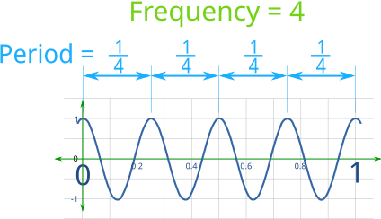
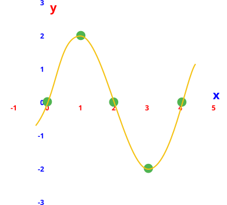
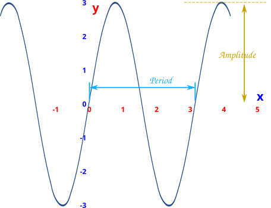

Amplitude, Period, Phase Shift and Frequency
Some functions (like Sine and Cosine) repeat forever
and are called Periodic Functions.
The Period goes from one peak to the next (or from any point to the next matching point):

The Amplitude is the height from the center line to the peak (or to the trough). Or we can measure the height from highest to lowest points and divide that by 2.

The Phase Shift is how far the function is shifted horizontally from the usual position.

The Vertical Shift is how far the function is shifted vertically from the usual position.
All Together Now!
We can have all of them in one equation:
y = A sin(B(x + C)) + D
- amplitude is A
- period is 2π/B
- phase shift is C (positive is to the left)
- vertical shift is D
And here's how it looks on a graph:

Note that we are using radians here, not degrees, and there are 2π radians in a full rotation.
Example: sin(x)
This is the basic unchanged sine formula. A = 1, B = 1, C = 0 and D = 0
So amplitude is 1, period is 2π, there's no phase shift or vertical shift:

Phase shift can be tricky with signs:
- Using y = A sin(B(x + C)) + D, then C > 0 shifts the graph left
- Some books use y = A sin(B(x − h)) + D, where h > 0 means a shift right
These match because C = −h.
Example: 2 sin(4(x − 0.5)) + 3
- amplitude A = 2
- period 2π/B = 2π/4 = π/2
- phase shift = −0.5 (or 0.5 right)
- vertical shift D = 3

In words:
- the 2 tells us it will be 2 times taller than usual, so Amplitude = 2
- the usual period is 2π, but in our case that's "sped up" (made shorter) by the 4 in 4x, so Period = π/2
- and the −0.5 means it will be shifted to the right by 0.5
- last the +3 tells us the center line is y = +3, so Vertical Shift = 3
Instead of x we can have t (for time) or maybe other variables:
Example: 3 sin(100t + 1)
To see the phase shift, we factor out 100 inside the sine:
3 sin(100t + 1) = 3 sin(100(t + 0.01))
Now we can see:
- amplitude is A = 3
- period is 2π/100 = 0.02 π
- phase shift is C = 0.01 (left)
- vertical shift is D = 0
And we get:

Amplitude
Amplitude is always positive!
A negative value in front of the function, such as −3 sin(x), reflects the wave upside down, but the amplitude is still 3.
Frequency
Frequency is how often something happens per unit of time (per "1").
Example: Here the cosine function repeats 4 times between 0 and 1:

So the Frequency is 4
And the Period is 14
In fact the Period and Frequency are related:
Frequency = 1Period
Period = 1Frequency
Example from before: 3 sin(100(t + 0.01))
The period is 0.02π
So the Frequency is 10.02π = 50π
Some more examples:
| Period | Frequency |
|---|---|
| 110 | 10 |
| 14 | 4 |
| 1 | 1 |
| 5 | 15 |
| 100 | 1100 |
When frequency is per second it is called "Hertz".
Example: 50 Hertz means 50 times per second
The faster it bounces the more it "Hertz"!
Animation
How to Sketch y = A sin(Bx)
Knowing A and B we can sketch a graph by hand:
Work out the Period (P): Calculate P = 2πB. This is the width of one full cycle.
Use the 5-Point Rule, mark these 5 points over one full period (P):
- Start: (0, 0)
- Peak: (P4, A)
- Middle: (P2, 0)
- Valley: (3P4, −A)
- End: (P, 0)
Connect the dots with a smooth wave!
Example: A=2, B=π/2
P = 2πB = 2ππ/2 = 4
Points are: (0, 0), (1, 2), (2, 0), (3, −2), (4, 0)
Mark the points, sketch the wave:

Writing the Function from a Graph
You can be a "math detective" and work backward from a graph to work out its equation.
First work out A and B:
- A: measure the height from the center line to a peak
- B: calculate: B = 2πPeriod
Example: a graph where the peak is at 3 and it repeats every π

- Amplitude A = 3
- Period P = π, so B = 2ππ = 2
- The equation is: y = 3 sin(2x)